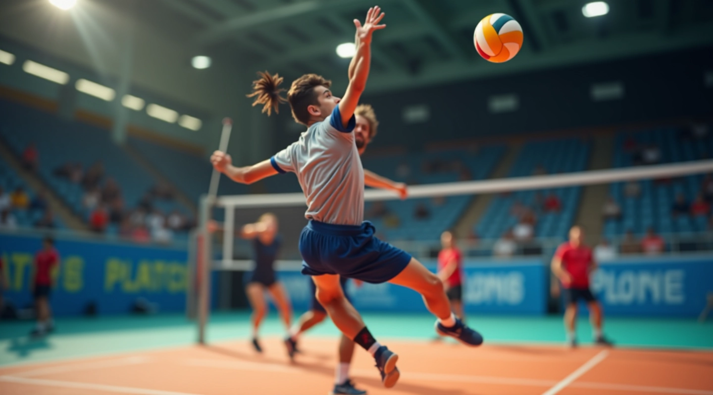
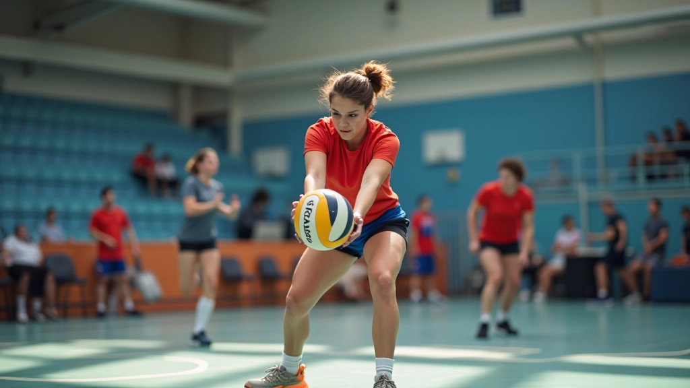
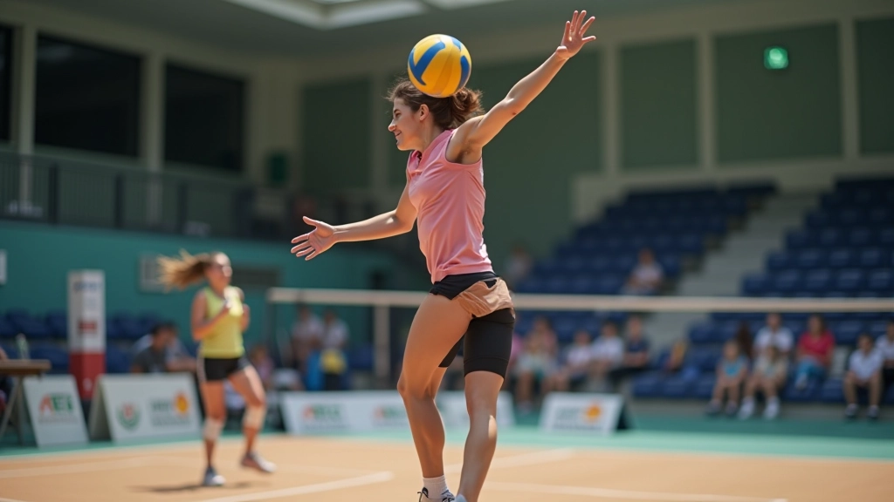
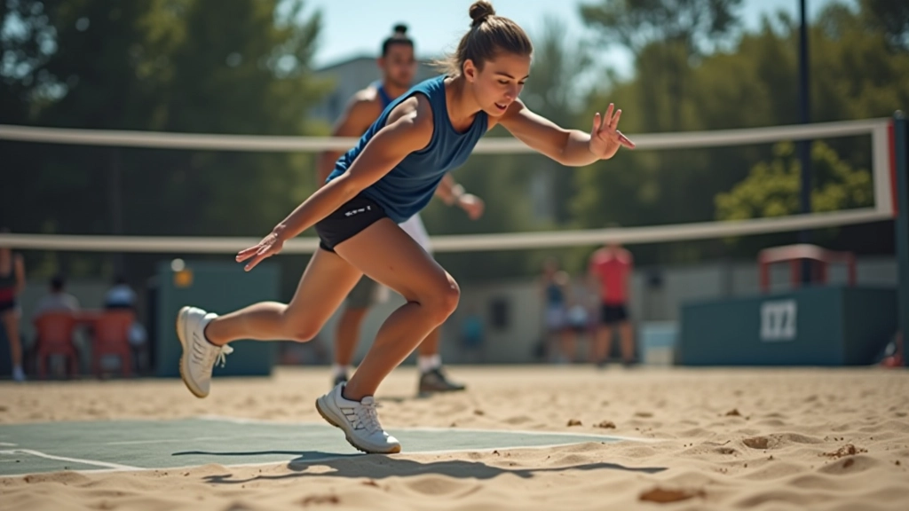
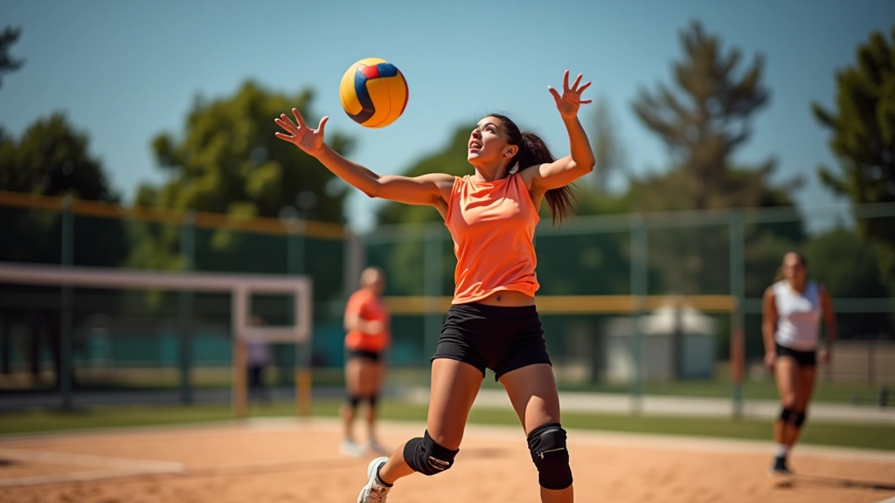
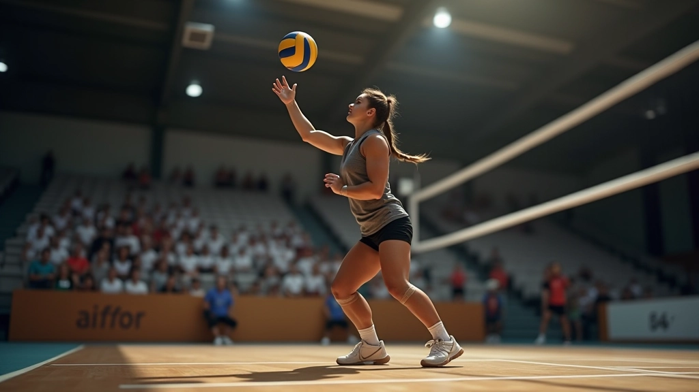
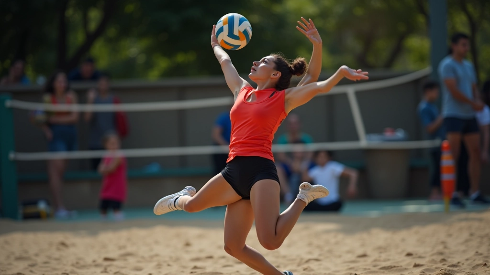
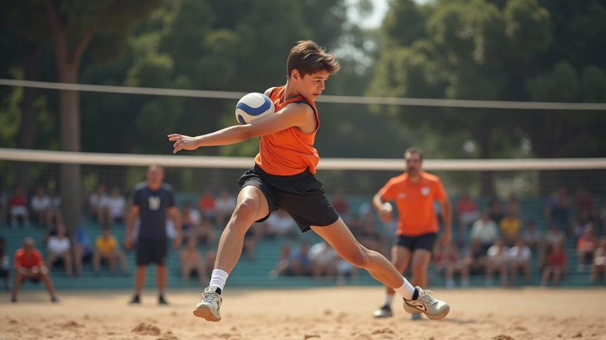

التوازن والاستقرار في الإرسال
إتقان أساسيات الثبات والتوازن هو المفتاح الحقيقي للإرسال القفزي القوي والدقيق


فريق تدريب قوة الإرسال
فريق المحتوى التحريري
كتبه فريق تدريب قوة الإرسال التحريري، متخصصون في تقديم إرشادات عملية وموثوقة لتطوير مهارات الإرسال القفزي.
لماذا التوازن مهم جداً؟
الكثير من اللاعبين الشباب يركزون على قوة الذراع والقفزة العالية، لكن يتجاهلون أساس كل شيء — التوازن الصحيح. الحقيقة أنك لو لم تكن متوازناً على الأرض، فكل تلك القوة ستضيع هباءً. التوازن هو ما يسمح لك بنقل كل طاقة جسدك إلى الكرة بدقة وتحكم.
عندما تقف بشكل صحيح وثابت، جسدك يعمل كوحدة واحدة. الساقان توفران القوة، الجذع يوجه الحركة، والذراع تنهي الضربة. لكن بدون توازن قوي، كل هذه الأجزاء تعمل ضد بعضها بدلاً من معاً.


الوقفة الأساسية
الوقفة الصحيحة هي نقطة البداية. قدماك يجب أن تكونا بعرض الكتفين تقريباً، مع توزيع متساوٍ للوزن على كلا القدمين. ركبتاك تكونان مثنيتين قليلاً — ليس مستقيماً تماماً وليس مثنياً جداً. هذا الثني الطفيف يعطيك استقراراً فوري.
قدم واحدة تتقدم قليلاً على الأخرى (عادة القدم المقابلة لذراع الإرسال). هذا الموقع يساعدك على نقل الوزن بسلاسة عند القفزة. الوزن ينتقل من القدم الخلفية إلى الأمامية وهذا يولد قوة طبيعية تصعد من الأرض إلى الجسد كله.
تقوية العضلات الأساسية
عضلات البطن والظهر والجوانب — هذه هي مركز التحكم في جسدك. بدونها، حتى لو كنت واقفاً بشكل صحيح، ستفقد التوازن عند القفزة.
تدريبات بسيطة وفعالة تشمل البلانك (تمسك موقف اللوح لمدة 30-45 ثانية)، تمارين الجسر، والتويست مع الأثقال. هذه التمارين تعمل على استقرار الجذع بطريقة عملية تترجم مباشرة إلى الملعب. لا تحتاج إلى معدات معقدة — بدنك وزنك كافٍ للبدء.


تطوير التوازن خطوة بخطوة
البداية الثابتة
مارس الوقفة الصحيحة بدون حركة. قف في الموقع لمدة دقيقة، شعر بتوزيع الوزن، تأكد من استقرارك الكامل.
نقل الوزن
حرك وزنك ببطء من قدم إلى أخرى. اشعر بكيفية عمل عضلات الساقين والجذع معاً. افعل هذا 10-15 مرة، ببطء وتحكم.
القفزة الخاضعة للتحكم
الآن أضف القفزة. اقفز ببطء، مع الحفاظ على التوازن عند الهبوط. هدفك ليس الارتفاع — إنه الثبات والتحكم.
تدريبات عملية يومية
تمرين الوقوف على رجل واحدة
قف على رجل واحدة لمدة 20-30 ثانية. كرر على الرجل الأخرى. هذا يقوي عضلات الكاحل والساق ويحسن الإحساس بالتوازن.
تمرين الخطوات الجانبية
خطو بسرعة متوسطة إلى اليمين ثم اليسار. حافظ على وضعية منخفضة قليلاً. هذا ينمي التوازن الديناميكي الذي تحتاجه أثناء اللعب.
تمرين الهبوط الناعم
اقفز بارتفاع منخفض واهبط برفق. اركز على الهبوط المتوازن بدلاً من القفزة نفسها. هذا يعلمك كيفية الحفاظ على الثبات بعد القفزة.
الخطوة التالية
التوازن والاستقرار ليسا موهبة طبيعية فقط — يمكنك تطويرهما من خلال التدريب المنتظم والوعي. ابدأ بالتمارين البسيطة، وركز على الشعور بجسدك وحركته. خلال 4-6 أسابيع من التدريب المنتظم (3-4 مرات أسبوعياً)، ستلاحظ فرقاً حقيقياً في قوة إرسالك والتحكم به.
تذكر: الإرسال القفزي الحقيقي يبدأ من الأرض، لا من السماء. قدماك توفران الأساس، والتوازن يوفران الثقة. مع الممارسة والصبر، ستشعر بالفرق في كل إرسالة.
ملاحظة مهمة: نتائج التدريب تختلف من شخص لآخر بناءً على العمر والخبرة السابقة والالتزام بالتمارين. هذا المقال يقدم معلومات تعليمية عامة. إذا كنت تعاني من آلام أو إصابات، استشر متخصصاً في العلاج الطبيعي أو مدرباً مؤهلاً قبل البدء بأي برنامج تدريبي جديد.
مقالات ذات صلة

تقنيات الإرسال القفزي للمبتدئين
تعلم الخطوات الأساسية والوقفة الصحيحة لإتقان الإرسال القفزي من البداية بطريقة آمنة وفعالة.

بناء القوة المتفجرة للساقين
اكتشف التمارين المثبتة لتطوير القوة المتفجرة في الساقين لقفزات أعلى وإرسالات أقوى.

تجنب الإصابات الشائعة
دليل شامل لحماية نفسك من الإصابات الشائعة في الإرسال القفزي والحفاظ على صحتك.